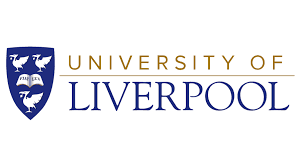

Education
- 
Degree: Master of Science
Field: Data science and AI
Institution: University of Liverpool
Year of Graduation: 2022
Grade: Distinction
Project: Show and Speak: Applying Transformers for Synthesizing Spoken Description of Images
-
Degree: Bachelor of Technology
Field: Electronics and Communication Engineering
Institution: National Institute of Technology Surat
Year of Graduation: 2017
Grade: Distinction
Project: Solar powered mobile handset
Relevant Courses
- Machine Learning and AI
- Database and Information systems
- Data Structures and Algorithms
- Reinforcement Learning
- Maths and Statistics for AI
Achievements & Certifications
- School topper award for securing highest marks (98/100) in computer science in all India higher secondary examination.
- Vice President of IETE Student's forum.
- Part of the only team to have an undergraduate project fully funded by the Indian Government from college.
- Google Data Analytics certification (Google).
- NLP certification (Coursera).
- Reinforcement Learning certification (University of Alberta).